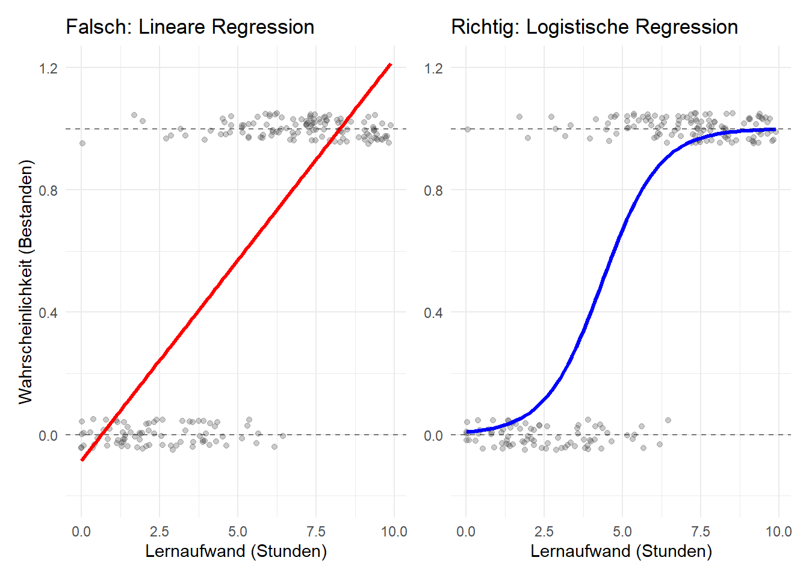

4 Logistische Regression
HinweisKompetenzziele für dieses Kapitel
Nach der Bearbeitung dieses Kapitels können Sie:
- Grenzen der linearen Regression: Erklären, warum OLS für binäre Zielvariablen (0/1) ungeeignet ist.
- Logistische Modellierung: Modelle für binäre Daten in R (
glm(..., family = "binomial")) anpassen und die Signifikanz der Prädiktoren ablesen. - Nicht-lineare marginale Effekte: Log-Odds in interpretierbare Wahrscheinlichkeiten umrechnen und verstehen, warum der marginale Effekt in der logistischen Regression nicht konstant ist.
Oft stehen wir vor Forschungsfragen, bei denen das Ergebnis keine kontinuierliche Zahl (wie ein Preis oder eine Länge) ist, sondern eine kategoriale Entscheidung mit zwei Ausprägungen (Ja/Nein):
- Klickt ein Nutzer auf die Anzeige? (Ja/Nein)
- Fällt ein Bauteil aus? (Ja/Nein)
- Erhält eine Bewerbung einen Rückruf? (Ja/Nein) Wir kodieren diese Ergebnisse als 1 (Erfolg/Ereignis tritt ein) und 0 (Misserfolg).
4.1 Warum die lineare Regression hier scheitert
Wenn wir versuchen, eine Zielvariable, die nur aus 0 und 1 besteht, mit der bekannten linearen Regression (lm()) zu modellieren, stoßen wir auf massive Probleme.
4.2 Das Logistische Modell
Um sicherzustellen, dass unsere Vorhersagen immer zwischen 0 und 1 bleiben, modellieren wir nicht direkt die Wahrscheinlichkeit \(p\), sondern transformieren sie. Wir nutzen den Logit (den natürlichen Logarithmus der Chancen, auch Log-Odds genannt).
Unsere Regressionsgleichung lautet nun: \[ \log_e\left(\frac{p}{1-p}\right) = b_0 + b_1 x_1 + b_2 x_2 + \dots + b_k x_k \]
Das Geniale an dieser Transformation: Die linke Seite kann nun Werte von \(-\infty\) bis \(+\infty\) annehmen. Wir können die rechte Seite exakt so aufbauen wie bei der klassischen linearen Regression.
4.2.1 Operative Umsetzung in R (glm)
Da OLS hier nicht mehr funktioniert, nutzen wir die Funktion für Generalized Linear Models (glm()) und sagen R ausdrücklich, dass die Fehlerverteilung binomial ist.
Wir analysieren experimentelle Daten (resume). Forscher schickten gefälschte Lebensläufe an echte Stellenanzeigen. Die Lebensläufe unterschieden sich zufällig in Berufserfahrung, Auszeichnungen und dem Namen, der entweder typischerweise weiß oder schwarz klang. Zielvariable ist erhaltener_rückruf (1 = Ja, 0 = Nein).
Code
# Modelliere: Rückruf anhand von Ethnie und Berufserfahrung
modell_logit <- glm(erhaltener_rückruf ~ ethnie + years_experience,
data = resume,
family = "binomial")
tidy(modell_logit) |> select(term, estimate, p.value)# A tibble: 3 × 3
term estimate p.value
<chr> <dbl> <dbl>
1 (Intercept) -3.00 2.37e-148
2 ethnieWeiß 0.438 4.56e- 5
3 years_experience 0.0391 2.14e- 5Wie Sie diese Tabelle lesen:
- Inferenz (
p.value): Wir lesen dies exakt wie bei der linearen Regression. Die Koeffizienten fürethnieWeißundyears_experiencesind beide signifikant (p < 0.05). Beide Prädiktoren haben einen statistisch nachweisbaren Effekt auf die Rückrufquote. - Deskription (
estimate): Vorsicht! Diese Zahlen (z.B. \(0,438\) für die Ethnie) sind keine Wahrscheinlichkeiten. Es sind die Änderungen der Log-Odds. Ein positiver Wert bedeutet: Die Wahrscheinlichkeit steigt. Ein negativer Wert bedeutet: Sie sinkt.
Ein weißer Name erhöht also die Wahrscheinlichkeit eines Rückrufs (ceteris paribus). Aber um wie viel Prozent genau? Das können wir an dieser Zahl nicht direkt ablesen.
4.3 Marginale Effekte in der logistischen Regression
In Kapitel 3 haben wir gelernt, dass der marginale Effekt die partielle Ableitung der Vorhersage nach der Variable \(x\) ist (\(\frac{\partial \hat{y}}{\partial x}\)).
Bei der klassischen OLS-Regression war das eine Konstante (die Linie ist überall gleich steil). Bei der logistischen Regression ist unsere Vorhersagekurve jedoch ein “S”.
Fazit: In der logistischen Regression ist der marginale Effekt niemals konstant. Er hängt zwingend davon ab, wie wahrscheinlich das Ereignis vor der Änderung von \(x\) bereits war.
4.3.1 Wahrscheinlichkeiten berechnen
Um aus den abstrakten Log-Odds greifbare Wahrscheinlichkeiten (\(p\)) zu machen, müssen wir die Modellgleichung umstellen:
\[ p = \frac{e^{\text{Modellgleichung}}}{1 + e^{\text{Modellgleichung}}} \]
In R müssen wir das nicht per Hand rechnen. Wir nutzen die predict() Funktion mit dem Argument type = "response", um Wahrscheinlichkeiten zu generieren.
4.3.2 Fallstudie: Die Auswirkung von Diskriminierung
Bauen wir ein voll spezifiziertes multiples Modell, um zu messen, wie stark sich ein “weiß klingender” Name gegenüber einem “schwarz klingenden” Namen auswirkt, wenn alle anderen Merkmale (Erfahrung, Abschluss, Auszeichnungen) im Lebenslauf identisch sind.
Code
modell_diskriminierung <- glm(erhaltener_rückruf ~ ethnie + geschlecht + years_experience + auszeichnungen,
data = resume,
family = "binomial")
tidy(modell_diskriminierung) |> select(term, estimate, p.value)# A tibble: 5 × 3
term estimate p.value
<chr> <dbl> <dbl>
1 (Intercept) -2.98 5.17e-138
2 ethnieWeiß 0.440 4.49e- 5
3 geschlechtMann -0.100 4.39e- 1
4 years_experience 0.0331 3.90e- 4
5 auszeichnungen1 0.756 3.22e- 5Der Koeffizient für ethnieWeiß ist \(0,442\) (p-Wert hochsignifikant). Die Diskriminierung ist statistisch nachweisbar. Um den Effekt greifbar zu machen, lassen wir R die Wahrscheinlichkeit für zwei identische fiktive Bewerbungen vorhersagen:
- Bewerbung A: Schwarz, Mann, 10 Jahre Erfahrung, keine Auszeichnungen.
- Bewerbung B: Weiß, Mann, 10 Jahre Erfahrung, keine Auszeichnungen.
Code
# 1. Wir bauen uns einen fiktiven Datensatz für die zwei Bewerber
neue_bewerber <- data.frame(
ethnie = c("Schwarz", "Weiß"),
geschlecht = c("Mann", "Mann"),
years_experience = c(10, 10),
auszeichnungen = as.factor(c(0, 0)) # Muss als Faktor übergeben werden
)
# 2. Wir lassen das Modell die Wahrscheinlichkeiten (response) vorhersagen
predict(modell_diskriminierung, newdata = neue_bewerber, type = "response") 1 2
0.05995200 0.09008557 Interpretation des marginalen Effekts: * Der Bewerber mit dem schwarz klingenden Namen (Bewerbung A) hat eine Rückrufwahrscheinlichkeit von ca. 6,4 %. * Der Bewerber mit exakt demselben Lebenslauf, aber einem weiß klingenden Namen (Bewerbung B) hat eine Rückrufwahrscheinlichkeit von ca. 9,6 %.
Das bedeutet: Der marginale Effekt der Variable “Ethnie” bei genau diesem Bewerberprofil beträgt \(+3,2\) Prozentpunkte. Relativ gesehen muss ein schwarzer Bewerber fast 50 % mehr Bewerbungen schreiben (da 9,6 % etwa das 1,5-fache von 6,4 % ist), um die gleiche Anzahl an Rückrufen zu erhalten.
4.4 Zusammenfassung der Entscheidungsstrukturen
- Modellauswahl: Ist die Zielvariable binär (0/1), wechseln Sie von
lm()zuglm(..., family = "binomial"). - Signifikanz prüfen: Lesen Sie den p-Wert in der
tidy()Tabelle exakt wie bei der linearen Regression, um zu prüfen, ob ein Prädiktor das Modell signifikant verbessert. - Effekte greifbar machen: Interpretieren Sie die Koeffizienten (
estimate) nicht direkt als Wahrscheinlichkeiten. Nutzen Siepredict(..., type = "response"), um Profile zu erstellen und die tatsächlichen, nicht-konstanten marginalen Effekte auf die Wahrscheinlichkeit zu quantifizieren.